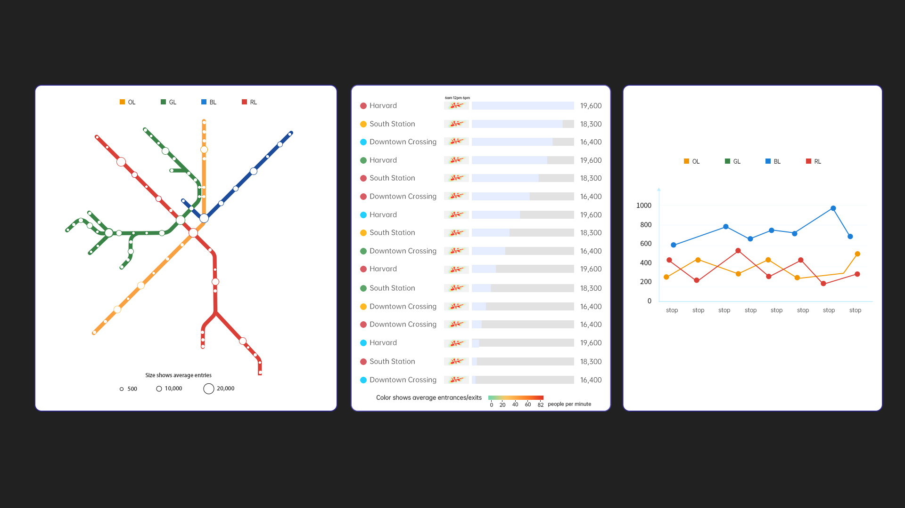
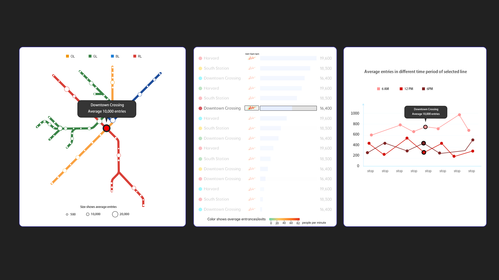

Qiping Zhang, Quinn Zhong, Han Wu, Ziming Zeng
Project-long Course Project as part of COSI 116A: Information Visualization, taught by Prof. Dylan Cashman, Brandeis University.
Summary of user needs and motivating questions.
Our initial motivation is to visualize the flow data of each station to show the different time periods of traffic flow between stations, so as to show the specific situation of traffic congestion. We plan to use different types of visualization encodings to present the content. We hope that our visualization can provide viewers with a new perspective on the congestion problem of Boston, while presenting the data in a concise and interactive way.
Users' needs:
1. Traffic congestion at the site
2. Differences in passenger flow between different routes
3. Differences in passenger flow between different time periods
4. Click to switch at any time and link time periods/lines/flow
Expectation: There is a clear focus, and a developed explanation of the problem, and a reasonable response is proposed.
Include the interactive visualization as part of this page. Static example follows.
We haven't finished yet.
Embedded MP4 demo video using the HTML5 <video> tag. For example, this screen recording Prof. Cody Dunne made of Mike Bostock's flexible transitions in D3 slide:
Final visualization screenshots (PNG images), design justifications, UI walk-through, and linked presentation slides.
We haven't finished yet.
Summary of data, data types, and data preprocessing.
Currently we use mainly station, time period, and foot traffic related data, reflecting the difference in foot traffic between different stations and time periods. At the same time, we filtered the data in coding and calculated some data to make the display more clear, for example, we filtered the data to show the difference between different stations and different directions of the on/off flow.
Summary of task table.
| Index(ID#) | Whether it is done | "Domain" Task | Analytic Task (low-level, "Query") | Search Task (Mid-level) | Analyze Task (High-level) |
|---|---|---|---|---|---|
| 1 | Yes | Examine how station congestion impacts nearby stations during peak hours. | compare | locate | derive |
| 2 | Identify patterns of ridership fluctuation due to weather, time of day, or events. | summarize | explore | derive | |
| 3 | Yes | Determine high traffic stations to focus improvement | identify | browse | present |
| 4 | Relating traffic congestion with other circumstances | discover | explore | summarize | |
| 5 | Compare seasonal variation between routes | compare | lookup | present | |
| 6 | Compare the congestion pattern between key Boston stations and adjacent areas | compare | browse | present | |
| 7 | Ridership difference between weekday and weekend | compare | lookup | present |
Sketches
 We basically designed this visualization content based on the characteristics of the data. We wanted it to show the characteristics of the flow of people at each station and to make it easier to compare. Switching between lines to show the difference between lines was also a major consideration. Through this comparison, we hope to provide new perspectives for the viewer.
Therefore, we designed the map to allow users to interact with the map by clicking on the circle where the station is located to link the bar chart and line chart to show the routes and the flow of people at the station.
In the actual coding, we modified (added) the content of the line chart so that it can show different directions (dir_id) in different colors.
In our design, the bar chart and map interact with each other, and the station details of the station selected is shown in the line chart.
Our visualization needs to be further modified.
The linkage between map, bar chart and line has been basically implemented, while using color, line, bar and other forms to encode data. Next we may optimize and adjust the appearance of the visual content. At the same time, we may adjust the barchart to display more data (a bar is divided into two parts, one part shows total on flow, one part shows total off flow, and the whole bar shows the overall total flow) and become more interactive. We may add more changes.
List here where any code, packages/libraries, text, images, designs, etc. that you leverage come from.
{kind=link}